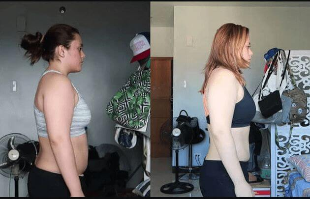

Obetavna študenta iz Slovenije je prejel državno nagrado na področju medicine za odkritje načina izgube 5 kg v 10 dneh brez kemičnih sredstev, lakote ali fizičnega napora.

Izračunajte, koliko kilogramov lahko izgubite zahvaljujoč Sarini formuli
Sara je predlagala fantastično idejo, s katero so se pričele ukvarjati slovenske znanstvene ustanove.
Novica o tej ideji se je hitro razširila ne le po Sloveniji, temveč po celem svetu.
Specialisti Oddelka za endokrinologijo ljubljanske klinike in številnih zasebnih klinik so se posvetili proizvodnji tega izdelka. Čaj so sicer že izdelali, vendar je trenutno na voljo le prebivalcem Slovenije.
Tragedija, ki je udarila v njeno družino, je Saro spodbudila k razmišljanju, da so diete, telovadba in tablete, pa tudi liposukcija, nevarne za naše zdravje v vsaj polovici primerov in da v resnici ne odpravijo težave odvečnih kilogramov.
Novinar: Sara, ti si ena izmed 10 najpametnejših študentov na svetu. Kako to, da si se odločila, da se spopadeš s problemom odvečne teže?
Sara Goljec: O tem pravzaprav ne bi rada govorila javno, saj je moj vzgib popolnoma oseben. Pred nekaj leti sem izgubila mamo zaradi hipertenzije, saj je imela vrsto let previsoko telesno težo. Sicer je bila dokaj zdrava in si je že nekaj časa prizadevala, da bi izgubila nekaj kilogramov, nato pa jo je nenadoma v spanju zadela kap. In to je vse, nič več je ni ob meni. Tudi moja babica je umrla zaradi istega razloga. Nato sem pričela proučevati različna področja, povezana z debelostjo in kako se ji izogniti. Bila sem zelo presenečena, ko sem odkrila, da so diete, telovadba, tablete in liposukcija nevarne za naše zdravje in da pravzaprav debelost še poslabšajo. Tudi moja mama se je držala nekaterih diet in obiskovala aerobiko vsaj 5 let.
Zadnje tri leta sem se popolnoma posvetila proučevanju tega področja. Pravzaprav se mi je ta novi način hujšanja, o katerem vsi govorijo, utrnil med pisanjem moje diplome. Vedela sem, da ustvarjam neka novega, nikoli pa si nisem mislila, da bo to povzročilo takšno zanimanje različnih institucij.
Neka ameriška farmacevtska družba je Sari ponudila 1 milijon dolarjev za njeno formulo, saj je načrtovala, da bo ta produkt prodajala za približno 1,000 dolarjev, vendar jih je Sara zavrnila, saj je vedela, da bi tako drag čaj lahko kupili le redki srečneži. Njen namen je bil pomagati čim več ljudem s previsoko telesno težo.
Novinar: O katerih ustanovah govorite?
Sara Goljec: Takoj ko je bil objavljen članek o moji novi metodi, s katero lahko oklestite nekaj kilogramov, objavljen, sem pričela dobivati ponudbe različnih ustanov, ki so želele odkupiti mojo idejo. Prva se je name obrnila neka francoska ustanova, ki mi je za mojo idejo ponudila 120.000 evrov. Zadnja pa je bila neka ameriška farmacevtska družba, ki je bila mojo idejo pripravljena odkupiti za 1 milijon dolarjev. Morala sem zamenjati svojo telefonsko številko in zapreti moje profile na družbenih omrežjih, saj me ne nehajo nadlegovati.
Novinar: Vendar formule po mojih informacijah še niste prodali, je res?
Sara Goljec: Tako je, nisem je še prodala. Morda se to zdi nekoliko ostro, vendar je nisem ustvarila za to, da bi od tega imeli korist drugi ljudje. Kaj pa če bi res prodali formulo drugi državi? Oni bi dobili patent, prepovedali drugim proizvodnjo tega izdelka in ustvarili gore denarja? Resda sem mlada, nisem pa neumna. Če bi prodala svojo formulo, je navadni ljudje ne bi mogli kupiti, da bi se znebili odvečne teže. Nekoč mi je nek tuji zdravnik povedal, da se bi morali tovrstni izdelki prodajati za najmanj 1.000 dolarjev. To je grozno. Kdo bo v Sloveniji plačal za čaj, ki stane 1.000 dolarjev?
Zato sem, ko sem prejela povabilo s strani vlade, da sodelujem pri razvoju izdelka za domači, slovenski trg, to priložnost zgrabila z obema rokama. Čaj smo razvili skupaj z najboljšimi specialisti slovenskega inštituta za endokrinologijo in številnih zasebnih klinik. To je bila res neverjetna izkušnja. Zdaj so bili pri tem izdelku opravljeni klinični preizkusi in je na voljo javnosti.
S strani vladnih inštitucij je nad razvojem tega izdelka bdel Sergej Ahčin, akademik in strokovnjak tega področja. Prosili smo ga, da nam pove kaj več o tem novem izdelku in njegovih načrtih.
Novinar: Kakšen je cilj ideje, s katero je na plan prišla Sara Goljec? Je res, da lahko s tem izdelkom ljudje oklestijo odvečne kilograme brez diet ali telovadbe?
Sergej Ahčin: Sarin cilj je v bistvu enak kot cilj avtomobilske navigacije: pokaže vam najkrajšo pot do izgube teže. In tu govorimo o načinu, ki vam bo koristil celo življenje...
Čaj se imenuje GoSlim . Ko vstopi v krvni obtok, odstrani toksične snovi na dva načina. Najprej s pomočjo absorpcije in svoje porozne strukture. Nato pa zaradi katalitične redukcije (procesa, s katerim negativno nabiti ioni onesnaževalci privlačijo pozitivno nabite ogljikove ione).
V čaju, ki je bil ustvarjen na podlagi Sarine ideje, GoSlim veže toksine v človeškem telesu in te, zaradi vezave njihovih molekul, hitro odstrani iz telesa preko prebavnega trakta.
GoSlim je čaj, ki ga morate uporabljati v skladu z navodili. Ta Čaj pospeši metabolizem in obnovi delovanje endokrinega sistema, spodbudi regeneracijo tkiva in na neverjeten način zniža občutek lakote. Je popolnoma nevtralen čaj: je le aktiven stimulator naravnih procesov v človeškem telesu. Kurjenje maščob se zgodi s pospešenim metabolnim procesom in diete bodo končno postale preteklost. Rezultat tega pa je, da bodo podkožna maščoba in problematična področja ZA VEDNO izginili in to s hitrostjo 500 gramov dnevno ! Pri tem pa je glavno, da GoSlim nima stranskih učinkov.
Sergej Ahčin: Tu so vidni rezultati ženske, ki je sodelovala pri kliničnih preizkusih za čaj GoSlim:

Novinar: Odlično! Bo ta čaj na voljo za prodajo v lekarnah? Kolikšna bo njegova cena?
Izdelki za izgubo teže prinašajo na milijone dolarjev dobička, in to le v Združenih državah. Čaj, ki ga je zasnovala Sara, lahko radikalno spremeni situacijo na tržišču.
Sergej Ahčin: Kakor hitro so doumele, da res ustvarjamo nekaj revolucionarnega, so nas farmacevtske družbe pričele napadati. Sari so ponudili že velike zneske, da bi odkupili njeno formulo, vendar ne z namenom, da bi čaj prodajali. Niso ga namreč želeli proizvajati sami, temveč le prepovedati masovno proizvodnjo tega izdelka. Zdravljenje debelosti je ogromna niša v farmacevtskem svetu. V Združenih državah, na primer, takšni izdelki ustvarjajo na milijarde dolarjev. In naš čaj bi popolnoma pretresel stanje na trgu. Nihče namreč ne bo želel vsak mesec trošiti denarja za nakup neučinkovitih izdelkov za hujšanje, če se lahko s to težavo spopadejo enkrat za vselej s sredstvom GoSlim in ZA VEDNO pozabijo na težavo, ki jim jo prestavlja odvečna teža.
Farmacevtske mreže pletejo farmacevtske družbe, ki druga drugi delajo usluge. Seveda je najpomembnejše, da se čaj prodaja. Zato ne želijo slišati za našo terapijo, čeprav je to edini čaj, ki ga priporoča slovenski znanstveni inštitut za prehrano za spopadanje z odvečno težo.
Novinar: In kako lahko torej stranke pridejo do tega izdelka, če ga ni na voljo v lekarnah?
Sergej Ahčin: Prišli smo do odločitve da če nas nočejo poslušati lekarne, da bomo nadaljevali brez njih in organizirali neposredno prodajo sredstva GoSlim kar sami, brez posrednikov. Razpravljali smo o številnih možnostih in izbrali najučinkovitejši način za distribucijo tega izdelka. GoSlim se ne prodaja v lekarnah! Zato lahko vsi tisti, ki želijo dobiti GoSlim z do 50% popustom, sodelujejo v našem žrebanju. Potem jih bodo naši kvalificirani specialisti kontaktirali z namenom razvoja prilagojenega načrta terapije z GoSlim . Ne glede na to, kje živite, ta čaj lahko pošljemo v kateri koli kotiček Slovenije. Dostava poteka po kurirju do hiše.
GoSlim se ne prodaja v lekarnah! Zato lahko vsi tisti, ki želijo dobiti GoSlim z do 50% popustom, sodelujejo v našem žrebanju. Potem jih bodo naši kvalificirani specialisti kontaktirali z namenom razvoja prilagojenega načrta terapije z GoSlim. Ne glede na to, kje živite, ta čaj lahko pošljemo v kateri koli kotiček Slovenije.
Pričeli smo z obsežno kampanjo v vseh medijih, da bi pritegnili pozornost ljudi na ta čaj in obljubili, da bomo žrebanju namenili 100 enot izdelka GoSlim
Vsi lahko sodelujejo v tem žrebanju in dobijo glavno nagrado: 50% popust!
Novinar: Koliko pa pravzaprav vaš čaj stane?
Sergej Ahčin: S slovenskimi vladnimi agencijami smo se uspeli dogovoriti za sredstva, s katerimi pokrijemo večino stroškov. Do 50% . Na srečo so dojeli, kako pomembno je, da za ta čaj izve širša javnost in ne le redki srečneži. V zamenjavo smo se dogovorili, da ga ne izvažamo izven države, temveč da ga prodajamo le v Sloveniji.
Novinar: Sergej, najlepša hvala! Zelo zanimivo je bilo odkrivati ta inovativni čaj! Bi želeli našim bralcem še kaj sporočiti?
Sergej Ahčin: Hvala vam! Vsem bralcem, ki se poskušajo spopasti s svojo odvečno težo, bi želel sporočiti, da je ta vzrok bolezni kot so:
- Previsok krvni tlak
- Diabetes mellitus
- Artroza
- Krčne žile
- Zamaščena jetra
Prosimo, ne odlašajte s tem. Spopadite se z vašo težavo takoj zdaj!
Žrebanje že poteka!
Pomnite, posebna promocija velja do:

Čestitke!
¡Zadeli ste našo glavno nagrado: GoSlim s 50% popustom.
Naročite GoSlim s 50% popustom
Komentarji:
To je popolnoma nov čaj. Tudi jaz sem sodelovala pri kliničnih preizkusih. Bilo nas je okrog 100. Težo sem že izgubila in najboljše pri tem je, da se mi ni vrnila.
Karla, to je fantastično! Tudi jaz sem se odločila, da letos shujšam! Le nečesa ne razumem: se moram držati diete, čeprav jemljem GoSlim ?
Laura, pri kliničnem preizkusu, v katerem sem sodelovala jaz, so bili ljudje, ki se niso držali diet in pri vseh so bili rezultati odlični! Seveda so mi obljubili, da bom v enem mesecu shujšala za 15 kg, in izgubila sem »le« 12,8 kg, vendar se ne bom pritoževala, saj že zelo dolgo časa nisem izgubila toliko teže! Nad rezultati sem navdušena! Seveda boš imela boljše rezultate, če temu dodaš še dieto in šport!
Punce, o tem izdelku sem brala na internetu. Z možem sva si ga res želela preizkusiti, saj sva želela shujšati. Tako sva navdušena, da komaj čakava na razprodaje...
Karla, prebrala sem tvoj komentar in bi te želela nekaj vprašati: Koliko časa že jemlješ GoSlim ?
Marina, jemala sem ga kakšen mesec, nekateri iz tiste skupine pa so ga jemali dlje časa. Rezultati so bili vidni že 7 dni po tem, ko sem ga pričela uporabljati. Tu so moje fotografije. Shujšala sem, saj se vidi.

Punce, malo se bom pobahala s svojimi rezultati. Bila sem v isti skupini kot Karla. Dosegli sva dobre rezultate. Presenečena sem, kako dobro ta čaj dejansko učinkuje. Vesela sem, da sem sodelovala pri kliničnem preizkusu. Moje življenje se je spremenilo na bolje! Poglej, to so moji rezultati na začetku in koncu poskusa.
Vau, zdaj ga hočem tudi jaz! Če ga naročim danes, dobim še popust!
Tudi jaz ga bom naročila. Rezultati so neverjetni! Tudi jaz želim prejeti ta čaj. Videla sem, da je število enot omejeno, saj je v Sloveniji ta čaj komaj prišel na tržišče.
Karmen, imava pa res srečo! Celo popust! Tudi jaz ga bom naročila! Še za mamo, babico in prijateljico, ki se z debelostjo borijo že dolgo časa in jim nič ne pomaga...
Ljudje, tudi jaz sem bila v skupini, ki je preizkušala ta čaj! Končno je na voljo za prodajo v Sloveniji! Ne morete si misliti, kako srečna sem: s številke XXL sem prišla na številko S! In navdušena sem! Tu je moj rezultat! Zdaj me vse prijateljice prosijo zanj, zase in za svoje sorodnike! Še več enot si bom naročila!
Dekleta, ali prav vidim? Odlični rezultati!
Ljudje, tudi jaz sem bil v skupini za klinično preizkušanje in tudi jaz sem shujšal! Ta čaj je popoln zame. Bil sem debel in nihče me ni maral... Zdaj pa imam dekle. Shujšal sem hitro. Tu so moje fotografije.
Takoj zdaj ga bom naročil! Tudi jaz sem pretežek... Na srečo je ta čaj primeren tudi za moške.
Na žalost nisem zadela ničesar, GoSlim sem naročila po redni ceni, brez popusta. Prepričana pa sem, da mi bo pomagal izgubiti tistih 8 kilogramov, ki jih tako zelo sovražim. Veliko sreče vam želim!